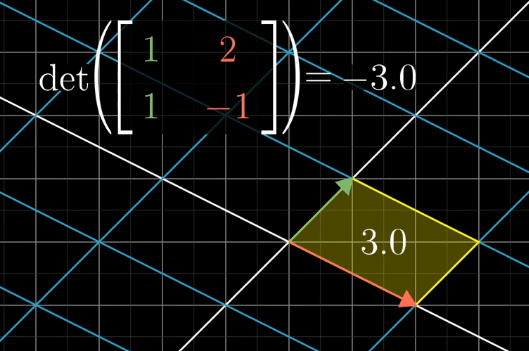

Linear Algebra
Table of Contents
- 1. Span
- 2. Basis
- 3. Matrices as Linear Transformations
- 4. Matrix Multiplication as Composition
- 5. Determinant
- 6. Matrices for solving linear equations
- 7. Rank
- 8. Column Space
- 9. Dot Product
- 10. Cross Product
- 11. How to translate a matrix
- 12. Eigenvectors and eigenvalues
- 13. Singular Value Decomposition
- 14. References
1 Span
The "span" of \(\hat{v}\) and \(\hat{w}\) is the set of all their linear combinations:
\begin{equation} a \hat{v} + b \hat{w} \end{equation}2 Basis
The basis of a vector space is a set of linearly independent vectors that span the full space.
3 Matrices as Linear Transformations
A transformation is linear if it fulfills two properties:
- All lines remain lines (they don't get curved)
- The origin is fixed.
Under a linear transformation, grid lines remain parallel and evenly spaced. This property allows us to compute the transformed vector, only by recording how the basis vectors are transformed.

4 Matrix Multiplication as Composition
Often, we want to describe the effects of multiple linear transformations composed together, for example, a rotation, followed by a shear. The composition of linear transformations is also a linear transformation, and can be described with a single matrix (see above).


Hence, we can think about matrix multiplication as computing where the final basis vectors land.
5 Determinant
The fact that linear transformations leave grid lines parallel and evenly spaced, means that the area of each unit square is scaled by the same amount.
The determinant of a transformation is the amount of scaling of area of a unit square. If the determinant is negative, then the orientation of the resulting grid space is reversed.

In 3D space, the determinant is the volume of the parallelpiped.
\begin{equation} det \left( \begin{bmatrix} a & b & c \\ d & e & f \\ g & h & i \\ \end{bmatrix} \right) = a \cdot det \left( \begin{bmatrix} e & f \\ h & i \end{bmatrix} \right) - b \cdot det \left( \begin{bmatrix} d & f \\ g & i \end{bmatrix} \right) + c \cdot det \left( \begin{bmatrix} d & e \\ g & h \end{bmatrix} \right) \end{equation}6 Matrices for solving linear equations

Suppose we want to compute \(\vec{x}\) such that \(A\vec{x} = \vec{v}\). Then we can compute the inverse of the matrix \(A\), which corresponds to the inverse transformation. For example if \(A\) were to rotate the grid space clockwise 90 degrees, then the inverse of \(A\) would be to rotate the grid space anti-clockwise 90 degrees: \(\vec{x} = A^{^{-1}} \vec{v}\).
Suppose the determinant of the transformation is 0. Then we know that it does not have an inverse. However, solutions can still exist.
7 Rank
The rank is the number of dimensions of the output of the transformation. It is easy to see that the maximum rank of the transformation is the original dimensions of the matrix. Rank corresponds to the maximal number of linearly independent columns of \(A\).
8 Column Space
The column space of the matrix \(A\) is the set of all possible outputs of \(A \vec{v}\). It is also the span of all the columns.
9 Dot Product
The dot product \(\vec{w} \cdot \vec{v}\) can be viewed as the \((\text{length of projected vector }\vec{x}) \cdot (\text{length of }\vec{x})\).
We can think of \(1 \times 2\) matrices as projection matrices, where the first column indicates where \(\hat{i}\) lands, and the second column indicates where \(\hat{j}\) lands. Suppose we have a vector \(\hat{i}\), and we want to project it onto \(\hat{\mu}\). By symmetry, it's the same value as when \(\hat{\mu}\) is projected onto \(\hat{i}\). However, this is just the \(x\) coordinate value of \(\hat{\mu}\).

Hence, \(\hat{i}\) and \(\hat{j}\) land at \(\mu_x\) and \(\mu_y\) respectively. We can easily see the duality between matrix-vector product and dot product here.

10 Cross Product
The cross product of \(\vec{v}\) and \(\vec{w}\), denoted \(\vec{v} \times \vec{w}\) is a vector. The vector has length equal to the area of a parallelogram obtained by duplicating and shifting the two vectors. The sign of the cross product is determined using the right-hand rule. This vector is perpendicular to the parallelogram.


We want to find the dual vector \(\hat{p}\) that corresponds to the cross product.

11 How to translate a matrix
Suppose someone uses a different coordinate system (i.e. different basis vectors), which we can represent with a matrix:
\begin{equation} \begin{bmatrix} 2 & -1 \\ 1 & 1 \end{bmatrix} \end{equation}Suppose then that we want to apply a linear transformation to a vector in her coordinate system. In the case of a rotation 90 degrees anti-clockwise, it would be represented in a matrix as:
\begin{equation} \begin{bmatrix} 0 & -1 \\ 1 & 0 \end{bmatrix} \end{equation}In the "default" basis vector coordinate system. What does this transformation look like in the new coordinate system? Given some vector \(\hat{v}\) in the other language. First, we translate the vector into one in the default language:
\begin{equation} \begin{bmatrix} 2 & -1 \\ 1 & 1 \end{bmatrix} \hat{v} \end{equation}Then, we apply the transformation to the vector in the default language:
\begin{equation} \begin{bmatrix} 0 & -1 \\ 1 & 0 \end{bmatrix} \begin{bmatrix} 2 & -1 \\ 1 & 1 \end{bmatrix} \hat{v} \end{equation}Then, we apply to the inverse of the change in basis matrix, to return the vector to the other language:
\begin{equation} \begin{bmatrix} 2 & -1 \\ 1 & 1 \end{bmatrix}^{-1} \begin{bmatrix} 0 & -1 \\ 1 & 0 \end{bmatrix} \begin{bmatrix} 2 & -1 \\ 1 & 1 \end{bmatrix} \hat{v} \end{equation}This form \(A^{{-1}}MA\) is frequently encountered when dealing with eigenvectors and eigenvalues.
12 Eigenvectors and eigenvalues
Consider the span of a particular vector, that is, the set of vectors obtainable by applying a scaling constant to it. Some vectors remain on their own span, even with linear transformations.
These vectors are called eigenvectors, and the value of the scaling constant is called the eigenvalue. Mathematically, this is expressed as:
\begin{equation} A \hat{v} = \lambda \hat{v} \end{equation}Consider a 3D rotation. If we can find an eigenvector for this 3D transformation, then we have found the axis of rotation.
13 Singular Value Decomposition
Given an input data matrix \(A\) consisting of \(m\) documents and \(n\) terms, we can decompose it into 3 matrices.
\begin{equation} A_{[m \times n]} = U_{[m \times r]} \Sigma_{[r \times r]} V_{[n \times r]}^T \end{equation}\(U\) are left singular vectors of size \(m \times r\), which we can think of as \(m\) documents and \(r\) concepts. \(\Sigma\) is a \(r \times r\) diagonal matrix, representing the strength of each concept, where \(r\) is the rank of the matrix \(A\). \(V\) stores the right singular vectors, consisting of \(n\) terms and \(r\) concepts.

It is always possible to decompose a real matrix \(A\) into \(A = U \Sigma V^T\), where:
- \(U\), \(\Sigma\), and \(V\) are unique
- \(U\) and \(V\) are column orthonormal: \(U^T U = I\), \(V^T V = I\)
- \(\Sigma\) is diagonal, and entries are positive, sorted in decreasing order.